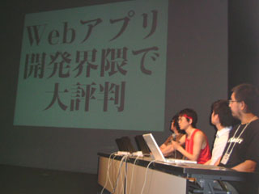

Lightweight Language Day and Night レポート
書いた人：
- 昼の部―すぎむし
- 夜の部―かん
はじめに
: 
去る 2005 年 8 月 27 日 (土)、日本の軽量言語を加速する/盛り上げる催しとして恒例の Lightweight Language カンファレンスが、Lightweight Language Day and Night (通称「LLDN」) と銘打って、東京は新宿で開催されました。
今年の LLDN は、昼の部と夜の部で分かれ、昼の部は四谷区民センター 9 階の四谷区民ホールにて、夜の部はロフトプラスワンにて行われ、壇上から繰り広げられる (いろんな意味での) 超絶技巧に満場が沸きました。
当日の全体プログラムや発表資料は LLDN の公式サイトを参照いただくこととして、以下はシンプルな参加レポートとさせていただきます。
Lightweight Language Day
どうやら会場には 40 名を超える大人数の Rubyist の皆さんが参加されていたようです。 「ようです」というのは、皆さんを一人一人確認した上でカウントすることができなかったからですが、会場の一割ほどの Rubyist の参加があったことは確かです。
Language Update
: 
午前中のセッションは、各 Lightweight Language (以下 LL) の第一人者がこの一年間の界隈を振り返り、その変化を共有する「Language Update」でした。
Ruby からは、日本 Ruby の会より、RubyConf2004 の真紅の T シャツに身を包んだ YARV の開発者ささだこういちさんが立ち、言語そのものの話題から日本 Ruby の会の活動まで、ここ一年の Ruby 界隈の話題を網羅する多面的な紹介がありました。
フレームワーク対決
: 
午後には 2 つのセッションが催されました。前半は、LL による Web アプリケーションのフレームワークの特徴比較を行う「フレームワーク対決」で、Ruby on Rails が俎上に載せられました。日本 Ruby の会会長、「Ruby の」高橋征義さんによる紹介でした。さて本日の会長のお姿は、紅い (炎の) 鉢巻に紅いタンクトップ。気合の入り具合が違います。
この高橋さんの発表に、なんと日経新聞の取材が入っていることが公表され、いやがおうにも注目の高まる中、高橋さんはあえて無難を良しとせず、新しい挑戦を込めた、熱のこもった発表を行いました。
キミならどう書く
: 
午後の後半は「キミならどう書く」、毎年恒例のセッションです。
「電卓」の実装、というお題だった今年は、フィギュアスケート風に「規定演技」部門と「自由演技」部門ができました。 「規定演技」部門では、事前に発表された漢数字電卓の仕様による実装が披露され、「自由演技」部門では、動作鑑賞の目的に特化したユニークな電卓が技を競いました。
Ruby の規定演技では、日本 Ruby の会より (会長から真紅の鉢巻を引き継いだ) 青木峰郎さんが立ち、伝統的なスキャナ + パーサを基にした設計をベースとしつつ、Ruby の特徴をフルに活かした電卓実装のポイントを披露しました。
つづいて、日本 Ruby の会より志村弘之さんが、お得意の Adobe Illustrator と Ruby の連携を使って、自由演技にふさわしい一発芸を披露。技術的な詳細は Win32OLE 活用法 第 4 回 Adobe Illustrator をご参照ください。
インターバル
昼の部と夜の部は 2 時間半間隔でした。 会場間は歩いて 20 分足らずでしたし、夜の部に参加しない方が大勢、ということで、 「せっかくなのでどこかに集まってダベろう」と越水さんが呼びかけたところ、 ものすごい人数が集まってしまいました。越水さんびっくり仰天。
最終的には公園でゴザを広げて、台風一過の心地よい晩夏の夕べの風の中、まったりと立ち話、座り話をしました。
印象記ですが、Ruby on Rails をきっかけに Ruby を始める方が現れるなど、確実に新しい流れが始まっているのを感じました。また、世の中「Ruby には お金のにおい がしない」という評判もあったりするらしいですが、話に耳を傾ける限り、必ずしもそんなことはないのかなと感じました。
Lightweight Language Night
会場をロフトプラスワンに移して夜の部が行われました。昼の部の四谷区民ホールとは打って変わり非常にくだけた雰囲気で、内容のほうも午前以上にネタを織り交ぜた楽しいものになっていました。
だめ自慢
: 
Ruby, Perl, Python, PHP がそれぞれダメさ加減を自慢する企画でした。 各言語ともとっておきのネタを投入してきており、LL を知らない人がこれだけを観たら間違いなく LL を使う気にならないだろう素晴らしい (？) 内容でした。
Ruby のダメ自慢は日本 Ruby の会の卜部さんが行いました。まずは「ドキュメントがダメ」というネタで公式ドキュメント Wiki の状況や www.ruby-lang.org のダメさを自慢 (？)。tDiary の固定リンクなども槍玉に上がったのですが、tDiary 作者のただただしさんが「俺のせいじゃない！」とツッコミを入れる一幕もありました。
そして禁断の「Rubyist がダメ」というネタが。「2ch とイナモデでしか健全な批判が行われていない」「リリースが……」などネタではありますが考えさせられる内容でした。
デモ自慢
: 
LL によるデモ大会です。6 つのデモのうち、半分の 3 つが Ruby によるものでした。
Rabbit は RD を使って記述することが出来るプレゼン用アプリケーションです。勿論、デモ自体も Rabbit を使ったプレゼンを中心に行われていました。 Web からプレゼンを操作したり、内容を書き換えたりするデモやプレゼン画面下のウサギ（プレゼンの進み具合で左へ進む）と亀（経過時間によって進む）の追いかけっこ（ウサギが亀に抜かれると時間オーバー）などインパクトのあるデモで度々歓声が上がっていました。
alog はプロキシサーバとして動作して、 Web サイトに付箋の形でメモなどを貼り付けることができるアプリケーションです。 JavaScript を駆使して付箋のサイズ・見え方をを自在に変えたりするデモが行われました。観客からの質問コーナーでビジネス展開が見込めるのでは、 Greasemonkey として動作するようにならないか、Web ページの内容を一部変えてしまうのは米国では著作同一権侵害との判決が出てるけどどうよ、など色々な質問・意見が出ていたのが印象的でした。
もうひとつは mod_ruby を使った「3 分ハッキング」で Hiki のかずひこさんがデモを行いました。「アンチ祭フィルタ」ということで、リファラ別に同時アクセス数をカウントし、定量を超えたリファラからのアクセスを遮断するプログラムをデモしていました。プレゼンのテンポがとても良かったです。
- デモ自慢「Rabbit(Ruby)」発表資料 (pdf)
- デモ自慢「Webアノテーションツール alog(Ruby)」 発表資料 (zip/ppt)
- デモ自慢「RubyでApacheを拡張しよう」発表資料 (pdf)
夜の部の終わりにはプレゼント抽選会がありました。 Ruby の書籍も多く用意されていたようです。
おわりに
LLDN の運営に携わってくださった皆さん、どうもありがとうございました。 このような催し物が来年にも無事続いてくれるといいですね。
発表者の皆さんにも感謝したいと思います。どうもありがとうございました。
そして、参加した Rubyist のみなさん、また集いましょう。